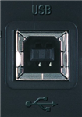
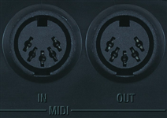
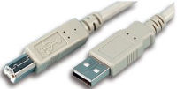
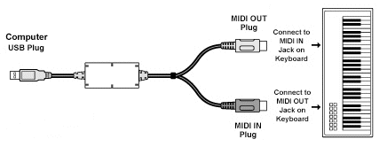

piano101 - midi cable hookup
Midi in to the PC let's you use PianoCheetah to show and record midi.Midi out from the PC let's PianoCheetah play the keyboard.
There are 2 Midi possibilities...
usb  versus  midi
USB can send notes both directions in one cable.
A regular midi cable sends notes in only one direction.
Hopefully your keyboard has a USB midi port.

Just a single USB cable from piano to PC.
Install driver software from keyboard manufacturer.
USB midi can very rarely cause audio interference.
If so, swap to standard midi cables. They never do.
Otherwise, you're stuck with "old school" midi cables.

You'll need a midi interface for your PC. connecting your PC's usb port to midi in and out plugs. Install driver software from the midi interface manufacturer (not from the keyboard manufacturer).
Don't get a really cheap one or the driver may have bugs.
next: the rig home